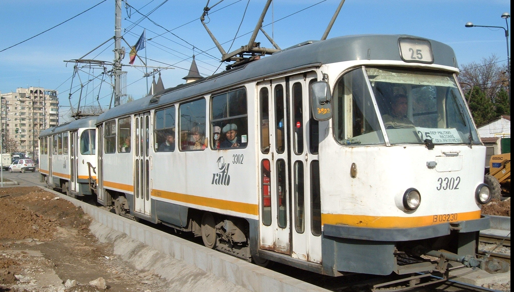

Limba:
Siguranta transportului din Bucuresti: două tramvaie s-au ciocnit în București. Cauza accidentului este investigată
28 iulie 2020
Două tramvaie s-au ciocnit marți în București, pe șoseaua Giurgiului, în zona cimitirului Evreiesc. Cauza accidentului nu este cunoscută deocamdată, dar investigația polițiștilor se bazează pe două ipoteze – neatenția vatmanului sau defecțiunea sistemului de frânare.
În momentul accidentului, unul dintre tramvaie se afla oprit în stație, fiind lovit din spate de un alt tramvai care nu a reușit să oprească la timp. Potrivit polițiștilor de la Brigada Rutieră, este vorba de două tramvaie care circulau între Șura Mare și strada Luică pe șoseaua Giurgiului.
„În data de 28.07.2020, în jurul orei 10.00, prin apel la 112 Brigada Rutiera a fost sesizată cu privire la producerea unui accident rutier care a avut loc pe șoseaua Giurgiului, în zona cimitirului Evreiesc, în care două tramvaie au intrat în coliziune”, se arată în comunicatul Biroului Poliției Rutiere București. Din primele date s-a stabilit faptul ca tramvaiele circulau dinspre strada Șura Mare către strada Luică. Traficul tramvaielor este restricționat dinspre Piața Progresului către strada Luică până la finalizarea cercetărilor și eliberarea liniei de tramvai.
În urma accidentului rutier a rezultat o victimă, pasager în tramvai, care a fost transportată la spital pentru acordarea de îngrijiri medicale. Ambii vatmani au fost testați cu aparatul alcoolscop, rezultatul fiind negativ. Se efectuează cercetarea la fața locului în vederea stabilirii cu exactitate a cauzelor și condițiilor în care s-a produs accidentul rutier. Accidentele de tramvai nu sunt rare în București. În urmă cu două luni, două tramvaie s-au ciocnit în zona Eroii Revoluției din sectorul 4 al Capitalei, șase persoane fiind rănite în accident.
STB vrea să retragă de pe traseu ultimele tramvaie cehești Tatra, după venirea noilor tramvaie cumpărate de Primăria Capitalei. Sursa: Economica.net
8 iulie 2020 Vechi de aproape jumătate de secol, ultimele tramvaie cehești Tatra care mai circulă în București vor fi scoase din trafic după ce vor veni cele 100 de tramvaie cumpărate de Primăria Capitalei, anunță Sindicatul Transportatorilor din București.
In video-ul de mai jos puteti vedea mai multe detalii: